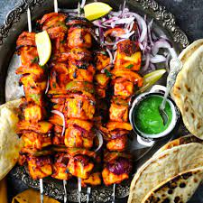

Description
Paneer Tikka is a popular and delicious tandoori snack where Paneer (Indian cottage cheese cubes) are marinated in a spiced yogurt-based marinade, arranged on skewers and grilled in the oven. Worry not if you don’t have an oven – instead of grilling in oven, you can make Paneer Tikka Recipe on stovetop on a tawa/skillet. In this post I am sharing both the oven and stovetop methods.
Ingredients
- 200 to 250 grams Paneer or Indian cottage cheese
- ½ cup diced onions or 1 medium sized onion
- ½ diced capsicum or 1 small to medium bell pepper – green, yellow or red
- 200 grams Hung Curd or greek yogurt
- ½ teaspoon Garam Masala
Steps
- Chop the paneer in square shaped cubes.
- Dice the onions and capsicum in 1 or 1.5 inches square pieces.
- In a large bowl, take the hung curd (greek yogurt) and whisk it lightly till it becomes smooth
- Add ginger-garlic paste, all the spice powders, carom seeds, black salt, regular salt, lemon juice and mustard oil.
- Mix very well. Check the taste and add more seasonings if required.